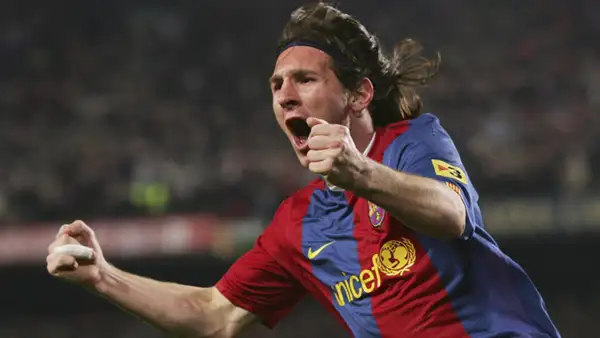
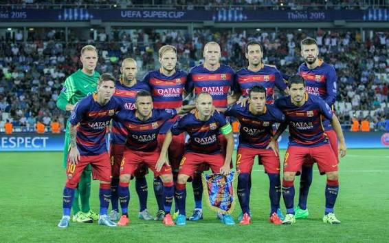
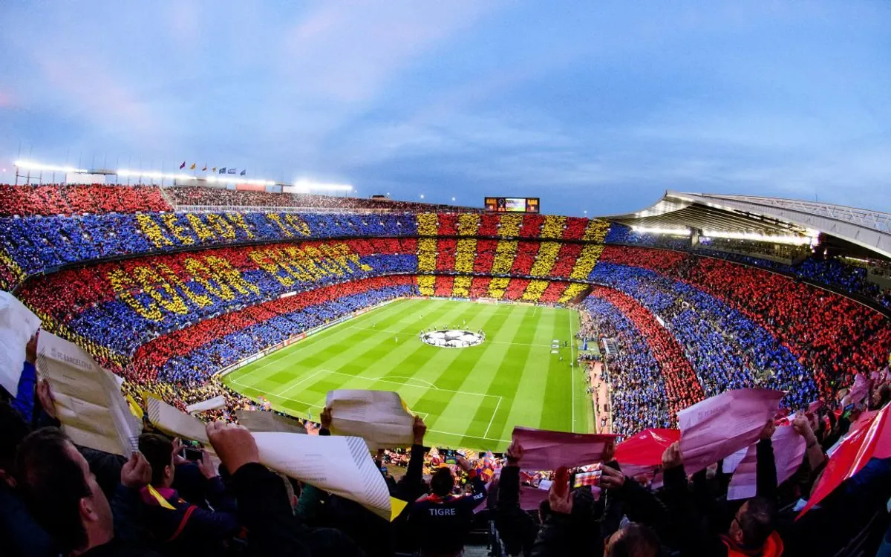
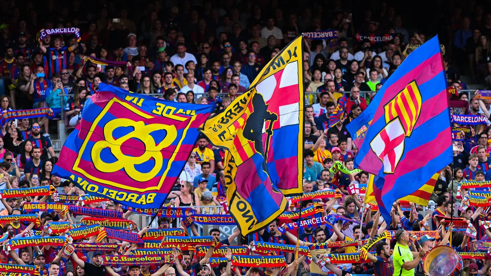

Um craque inesquecível 👑
Messi marcou mais de 500 gols com a camisa do Barcelona.
.svg.webp)
Um pouco do clube que faz tanta gente vibrar.

Messi marcou mais de 500 gols com a camisa do Barcelona.

Craques como Messi, Xavi e Iniesta fizeram história juntos.

Inaugurado em 1957 para substituir o antigo estádio Les Corts.

Na arquibancada ou de longe, a torcida está sempre junto e faz cada jogo ser especial.

O clube faz parte da história e do orgulho de uma cidade vibrante.

Duas cores que viraram símbolo de paixão para milhões de pessoas.